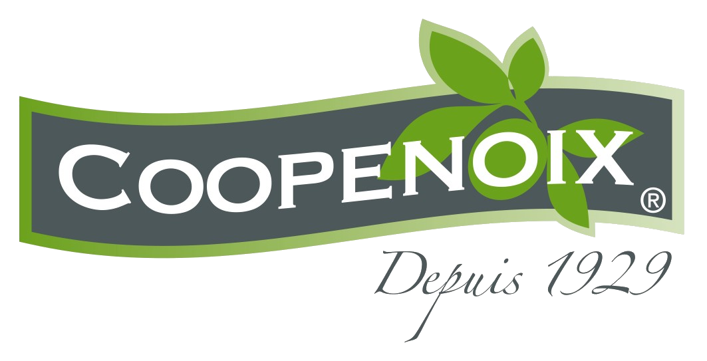
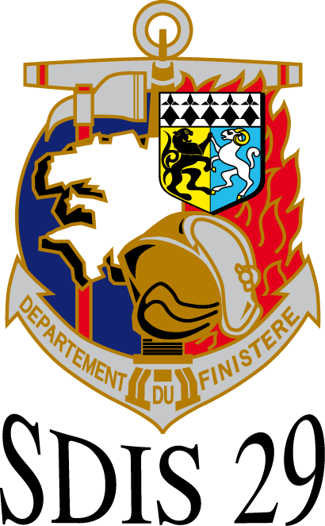

ASA Informatique à Arnay-le-Duc (21230) Stagiaire du 27/01/2020 au 13/03/2020 Mission et tâches réalisées: Installation Windows 10 / Centos 7, maintenance ordinateurs / serveurs.
Mobile Team à Dijon (21000) Stagiaire du 02/11/2020 au 18/12/2020 Mission et tâches réalisées: restauration de talkie-walkie et de parc de talkie-walkies. Reconditionnement de talkie-walkies.
ASA Informatique à Arnay-le-Duc (21230) Stagiaire du 30/05/2022 au 06/07/2022 Mission et tâches réalisées: Installation Windows 10 / Centos 7, maintenance ordinateurs / serveurs.
ASA Informatique à Arnay-le-Duc (21230) Stagiaire du 20/02/2023 au 24/03/2023 Mission et tâches réalisées: Installation Windows 10 / Centos 7, maintenance ordinateurs / serveurs.
Mes formations et mes diplômes:
BTS (Brevet Technicien Supérieur) - SIO (Services Informatiques au Organisations) 2021 - 2023 Option A SISR ( Solutions d'infrastructure, systèmes et réseaux ) Lycée Le Castel, 21000 Dijon
Baccalauréat Professionnel - SN ( Systèmes Numériques ) Mention Bien 2019 - 2021 option B SSIHT (Sûreté et Sécurité des Infrastructures, de l'Habitat et du Tertiaire) Lycée Antoine, 21300 Chenôve
BEP (Brevet d'Études Professionnelles) 2020 Lycée Antoine, 21300 Chenôve
Mes projets.
1ère année
Projet Coopenoix

1er projet en 1ère année de BTS permettant la découverte du labo réseau. Mise en place de quatres postes au sein d'un sous-réseau.
Projet GSB partie 1
Projet en 1ère année de BTS. Mise en place d'un serveur AP21 avec DokuWiki, MariaDB et Adminer.
Projet GSB partie 2
Projet en 1ère année de BTS. Mise en place de plusieurs serveurs (GLPI, Git, Wordpress et DokuWiki). Par la suite, sécurisation avec Fail2Ban, minimisation des ports ouverts et services installés.
2ème année
Projet SDIS29

Projet en 2ème année de BTS. Mise en place de plusieurs serveurs en ajoutant de la supervision à chacun et utilisation de Ansible pour installation et configuration ( DokuWiki, Git, Nagios)
Projet GSB
Projet en 2ème année de BTS. Utilisation de Docker pour "conteneuriser" une application sous PHP